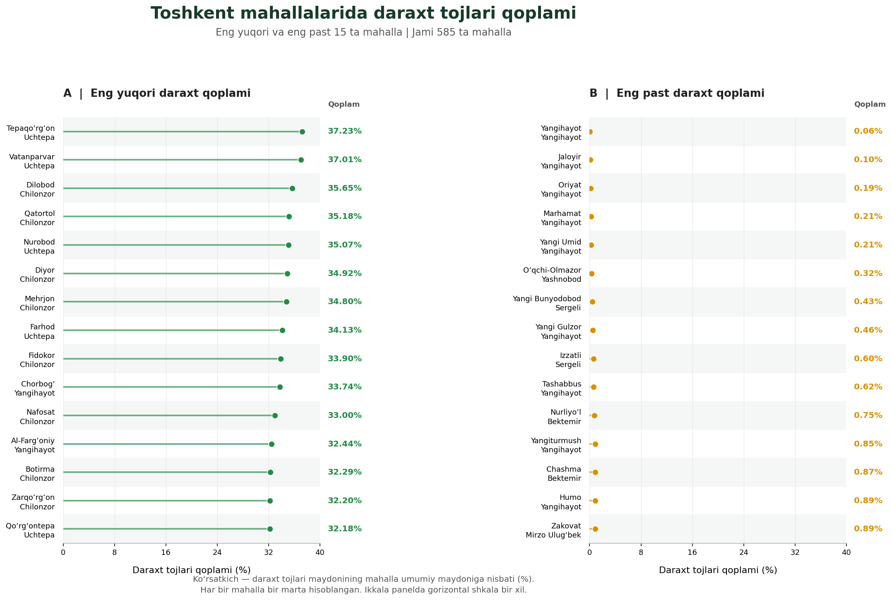
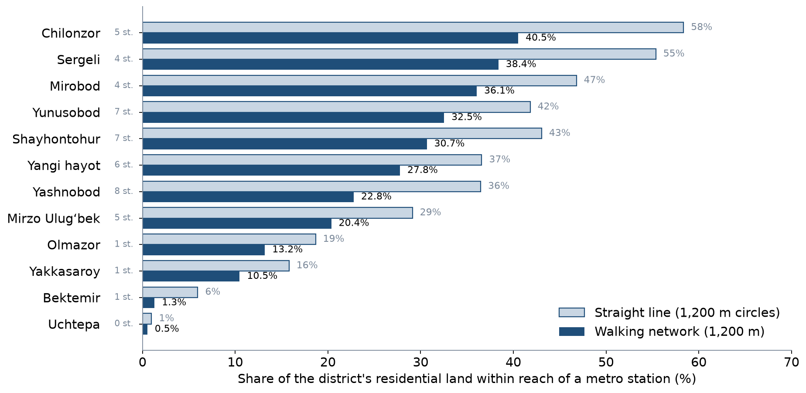

LEC6 · Urban Transport Systems Planning and Design · TSTU · Prof. J. Sodikov
1 / 23
What you will be able to do after today
Explain how benefits and costs of transport are distributed by income, age, gender and ability
Use a principle of distributive justice to judge a project
Assess travel-cost and time burdens and universal access
Identify who benefits from your corridor project and who pays
2 / 23
This lecture is about who gains and who loses from transport decisions. You will see how benefits and costs are spread by income, age, gender and ability, and use a principle of distributive justice to judge a project. You will also learn to assess burdens of travel cost and time and to check for universal access. Finally, you will identify who benefits from your corridor project and who pays.
Why justice is a transport question
Transport decides who can reach jobs, schools and care
It also decides who breathes the fumes, crosses the dangerous road and gives up space
A published course on urban transportation planning and policy examines policymaking in relation to social and environmental justice
A published course on transportation policy treats environmental justice and facility siting as core policy problems
3 / 23
Transport decides who can reach jobs, schools and health care. It also decides who breathes the fumes, who has to cross the dangerous road and who gives up space. So every transport decision shares out benefits and harms between people. A published course on urban transportation planning and policy studies policymaking in relation to social and environmental justice. A course on transportation policy treats environmental justice and the siting of facilities as core policy problems.
Principles of distributive justice
Utilitarian: maximise total benefit, whoever receives it
Egalitarian: reduce differences between groups
Sufficiency: everyone should reach a minimum level of accessibility
Rawlsian: improve the position of the worst off first
Capabilities: what people are actually able to do and be
4 / 23
Distributive justice asks how benefits should be shared between people. A utilitarian approach maximises the total benefit, whoever receives it, while an egalitarian approach tries to reduce differences between groups. Sufficiency means everyone should reach at least a minimum level of accessibility, and a Rawlsian approach improves the position of the worst off first. The capabilities approach looks at what people are actually able to do and be. In their 2017 review, Pereira, Schwanen and Banister argue that accessibility is the good that transport should share out.
Transport and social exclusion
Transport disadvantage plus social disadvantage leads to exclusion
Barriers: cost, distance, time, safety, information, physical access
Exclusion is often invisible in average travel statistics
Ask who does not travel, not only who does
5 / 23
Lucas (2012) explains that transport disadvantage combined with social disadvantage leads to social exclusion. The barriers include cost, distance, time, safety, information and physical access. Exclusion is often invisible in average travel statistics, which describe the trips people make. So ask who does not travel, not only who does.
Groups, burdens and the Tashkent evidence we have
Group
Typical burden
Tashkent evidence
Low income
Fares and travel time as a share of income
No open household data — collect
Children
Safe routes to school
Police register, ages recorded
Older people
Walking distance, crossings, injury severity
Police register (older age band)
Women
Trip chaining, personal security
Survey sample mostly male
People with disabilities
Steps, kerbs, missing ramps
Pulatova survey
Peripheral residents
Distance to stations and services
LAB3 catchments, Ergashova
6 / 23
This table lists groups that often carry extra transport burdens, and the evidence available for each in Tashkent. For low-income travellers the burden is fares and travel time as a share of income, but no open household data were found, so these must be collected. The police register covers children and older people, Pulatova's survey covers people with disabilities, and LAB3 and Ergashova cover peripheral residents. For women the evidence is weak, because the survey sample was mostly male. Be honest about such gaps in your own work.
Assessing cost and time burdens
Cost burden = monthly travel spending ÷ monthly income
Time burden = daily travel time to essential destinations
Example: two fares a day × 22 working days, compared across income groups
Report the distribution (lowest fifth vs highest fifth), not only the average
Tashkent fares and incomes: collect current values with a dated source in P3
7 / 23
The cost burden is monthly travel spending divided by monthly income, and the time burden is the daily travel time to essential destinations. For example, you can multiply two fares a day by 22 working days and compare the result across income groups. Report the distribution, such as the lowest fifth against the highest fifth, not only the average. In P3 you will collect current Tashkent fares and incomes with a dated source.
Universal access
Design for the least able user: step-free, ramps, tactile paving, seating, shade
Pulatova's survey: 73.1% say there is no infrastructure for people with disabilities
46.1% say footways have no shade
47.5% say footways are used for car parking
8 / 23
Universal access means designing for the least able user, with step-free routes, ramps, tactile paving, seating and shade. In Pulatova's survey, 73.1% of respondents say there is no infrastructure for people with disabilities. Also, 46.1% say footways have no shade, and 47.5% say footways are used for car parking. The survey does not report its sample size, so treat these figures as indicative.
Environmental justice
Who lives beside the busy road, the depot, the hot treeless street?
Tashkent's annual PM2.5 reached 31.5 µg/m³ in 2024
Tree canopy ranges from 0.06–37.23% between mahallas
Heat and shade will be measured in Week 9
9 / 23
Environmental justice asks who lives beside the busy road, the bus depot or the hot street without trees. In 2024, Tashkent's annual PM2.5, a measure of fine particle pollution, reached 31.5 µg/m³. Tree canopy cover ranges from 0.06% to 37.23% between mahallas, so shade is spread very unevenly. Week 9 will measure heat and shade.
Shade is unequal: tree canopy by mahalla

Ergashova (2026): 9 of the 15 lowest-canopy mahallas are in Yangihayot. Reproduced with permission (Uzbek labels).
10 / 23
This figure from Ergashova (2026) compares the 15 mahallas with the most tree canopy and the 15 with the least. Several of the best-shaded mahallas are in Uchtepa and Chilonzor. Of the 15 lowest-canopy mahallas, 9 are in Yangihayot district, so shade is unequal across the city. The labels are in Uzbek because the figure is reproduced with permission.
Who reaches the metro on foot?
LAB3: residential land within a 1,200 m walk of a station, by district
11 / 23
The next slides ask a justice question: who can reach the metro on foot? LAB3 measures, for each district, how much residential land lies within a 1,200 m walk of a station. Residential land stands in for where people live, because the available population data are unreliable.
Walking access to the metro by district

Residential land within reach: 40.5% in Chilonzor, 0.5% in Uchtepa. Pale bars: straight-line circles.
12 / 23
The chart shows, for each district, the share of residential land within a 1,200 m walk of a metro station. Dark bars use the walking network and pale bars use straight-line circles. Chilonzor has the best coverage at 40.5%, while Uchtepa, which has no station of its own, has only 0.5%. So where people live in relation to the stations decides who benefits from the metro.
Reading the access map
City-wide, 23.8% vs 33.7% of residential land is within reach by network vs straight line
Metro investment benefits those who live near stations; others depend on buses
Uchtepa has no station: equity needs feeders, not only more metro
Population layers could not be used: Kontur misplaces Tashkent's residents
13 / 23
Across the city, 23.8% of residential land is within a walk of a station on the network, against 33.7% in a straight line. Metro investment mainly benefits people who live near stations, and others depend on buses. Uchtepa has no station, so fair access there needs feeder services, not only more metro. Population layers could not be used, because Kontur places Tashkent's residents in the wrong areas.
Safety harm is unequal
Pedestrian strikes: 57.4% of police crash records (2016)
Age 60+ vs adults: OR 1.96 (1.09–3.52) for recorded death
A 70-year-old in an overnight crash: 26.7% vs 8.6% recorded death as pedestrian vs occupant
Those who drive least bear the most serious harm
14 / 23
In the 2016 police register, pedestrian strikes are 57.4% of crash records. Casualties aged 60+ have higher odds of a recorded death than adults: OR 1.96, with an uncertainty range of 1.09–3.52. For a 70-year-old in an overnight crash, the predicted chance of a recorded death is 26.7% as a pedestrian against 8.6% as a vehicle occupant. So the people who drive least bear the most serious harm. These are patterns among casualties recorded by the police, not risks for the whole population.
Who pays for a cycle network?
Closing Tashkent's cycle gaps puts 94% of new links on sidewalks
66.4% of riding already happens on sidewalks
Cyclists gain; pedestrians may lose space unless footways are protected
A just design states both, and mitigates the loss
15 / 23
Normukhammadov (2026) found that closing the gaps in Tashkent's cycle network would put 94% of the new links on sidewalks. Already, 66.4% of riding happens on sidewalks. Cyclists would gain, but pedestrians may lose space unless footways are protected. A just design states both effects and reduces the loss for pedestrians.
Whose voice is in the data?
Pulatova's survey: 72.2% of respondents male, sample size not reported
Women, children and older people are under-represented in most counts and surveys
Modelled population data can be wrong by a factor of several (Week 2)
Missing groups in data become missing groups in decisions
16 / 23
In Pulatova's survey, 72.2% of respondents were male, and the sample size is not reported. Women, children and older people are under-represented in most counts and surveys. As Week 2 showed, modelled population data can be wrong by a factor of several. When groups are missing from the data, their needs tend to go missing from decisions too.
Critical reading: checking a dissertation's numbers
Uchtepa: 27,058 pixels give 60, not 54
Yangihayot: 28,852 pixels give 2,885,200 m² (64), not 2,685,200 m² (59)
Claimed saving of $19,007,010 per year from a formula with no distance term
P3 asks you to recompute and to name the missing assumptions
17 / 23
Even respected sources need checking. In Pulatova's appendix, Uchtepa's 27,058 pixels give an index of 60, not 54, and Yangihayot's 28,852 pixels give 2,885,200 m² (64), not 2,685,200 m² (59). Her claimed saving of $19,007,010 per year comes from a formula with no distance term. Her method is sound, but the arithmetic and some assumptions need checking. In P3 you recompute these values and name the missing assumptions.
Benefit–cost incidence: a template
Group
Benefits
Costs
Evidence and its gaps
Bus passengers
Faster, more reliable trips
Construction disruption
Counts, headways
Car drivers
—
Less road space, longer queues
Counts, journey times
Pedestrians
Safer crossings
Narrower footway if not protected
Audit, survey
Shopkeepers
More passing customers
Loss of kerbside parking
Interviews
Residents on the street
Less noise
Construction noise
Observation
18 / 23
A benefit–cost incidence table lists, for each group, what it gains, what it loses and how good the evidence is. The example is for a bus-lane project: bus passengers gain faster, more reliable trips, while car drivers lose road space and may queue longer. Pedestrians, shopkeepers and residents also gain and lose in different ways. In P3 you fill in this table for your own corridor.
Discussion
In your corridor project, who is the worst-off user — and what would a Rawlsian planner change first?
Name the group, the evidence and the change.
19 / 23
This question asks you to name the worst-off user of your corridor and the evidence for that choice. Then decide what a Rawlsian planner, who improves the position of the worst off first, would change first. This prepares the justice statement in P3.
Key takeaways
Every transport project redistributes access, safety, space and pollution
Choose and state a principle: sufficiency and worst-off-first are common choices
Tashkent evidence is strongest on safety and walking access, weakest on income and gender
Check the numbers — including those in respected sources
20 / 23
Every transport project redistributes access, safety, space and pollution between groups. Choose a justice principle and state it; sufficiency and worst-off-first are common choices. In Tashkent, evidence is strongest on safety and walking access and weakest on income and gender. Check the numbers you use, including those in respected sources.
Stage 1 of the course project is due this week
Problem, objectives and 5–7 indicators (P1)
Baseline data, survey plan and data-quality log (P2, LAB2)
Corridor map with dataset log (LAB1) and access catchments (LAB3)
Who benefits and who pays (P3)
21 / 23
Stage 1 of the course project is due this week, and it brings together the work of Weeks 1 to 3. It includes your problem, objectives and 5–7 indicators from P1, and your baseline data, survey plan and data-quality log from P2 and LAB2. It also includes the corridor map with its dataset log from LAB1, the access catchments from LAB3, and who benefits and who pays from P3.
References
MIT Department of Urban Studies and Planning. 11.540 Urban Transportation Planning and Policy (J. Aloisi). MIT Course Catalog, Course 11 subjects. https://catalog.mit.edu/subjects/11/
Salvucci, F., & Coughlin, J. (2004). 1.253J/11.543J Transportation Policy and Environmental Limits, Spring 2004. MIT OpenCourseWare. https://ocw.mit.edu/courses/1-253j-transportation-policy-and-environmental-limits-spring-2004/
Pereira, R. H. M., Schwanen, T., & Banister, D. (2017). Distributive justice and equity in transportation. Transport Reviews, 37(2), 170–191. https://doi.org/10.1080/01441647.2016.1257660 (open preprint: https://doi.org/10.31235/osf.io/9hhf7) https://doi.org/10.31235/osf.io/9hhf7
Lucas, K. (2012). Transport and social exclusion: Where are we now? Transport Policy, 20, 105–113. https://doi.org/10.1016/j.tranpol.2012.01.013 https://doi.org/10.1016/j.tranpol.2012.01.013
Sodikov, J. I., et al. (under review). Odds of recorded death among police-recorded road-traffic casualties and register data quality in Tashkent, Uzbekistan. Traffic Injury Prevention (revision r4).
Pulatova, Z. S. (2024). Walkability assessment of Tashkent city districts (PhD dissertation, in Uzbek; supervisor J. I. Sodikov). Tashkent State Transport University.
Ergashova, M. Z. (2026). 15-minute walkability of Tashkent mahallas — dissertation defence presentation, 14 Oct 2026 (in Uzbek). Tashkent State Transport University.
TSTU course team (2026). Open data for Tashkent: inventory for the Excel/QGIS labs. Course research note, 22 October 2026 (Materials/_research/open_data_tashkent.md).
Normukhammadov, A. (2026). Pedalling Towards Sustainability: Developing an Integrated Bicycle Network for Enhanced Urban Mobility in Tashkent City (PhD thesis draft; supervisor J. I. Sodikov). Tashkent State Transport University.
Kontur (2023). Kontur Population: Uzbekistan, 400 m H3 hexagons. Humanitarian Data Exchange. https://data.humdata.org/dataset/kontur-population-uzbekistan
Salvucci, F. (2016). 1.252J/11.540J Urban Transportation Planning, Fall 2016. MIT OpenCourseWare. https://ocw.mit.edu/courses/1-252j-urban-transportation-planning-fall-2016/
Rupprecht Consult (Ed.) (2019). Guidelines for Developing and Implementing a Sustainable Urban Mobility Plan (2nd ed.). European Commission / Eltis. https://www.eltis.org/mobility-plans/sump-guidelines